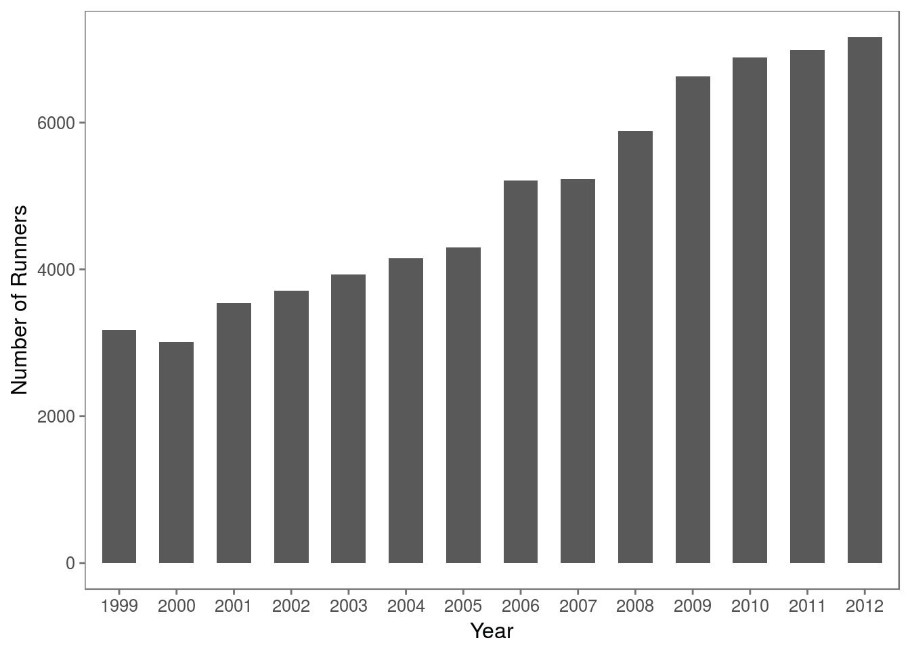
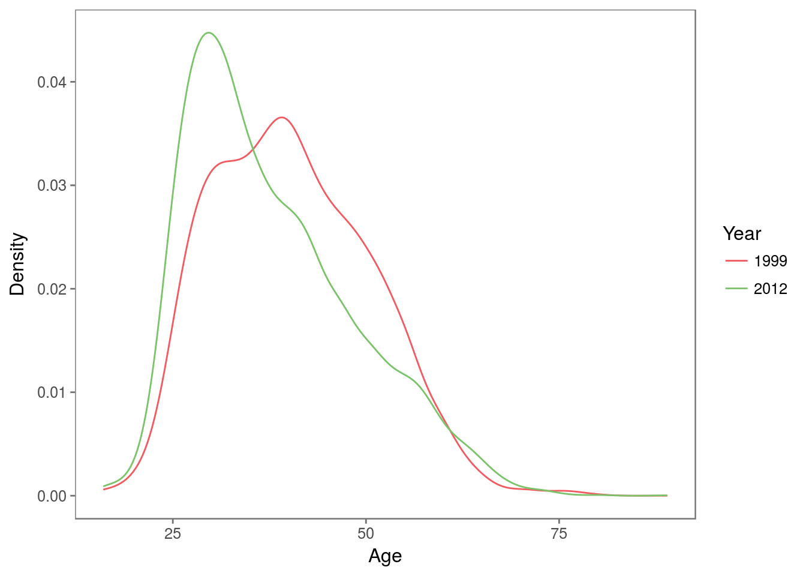
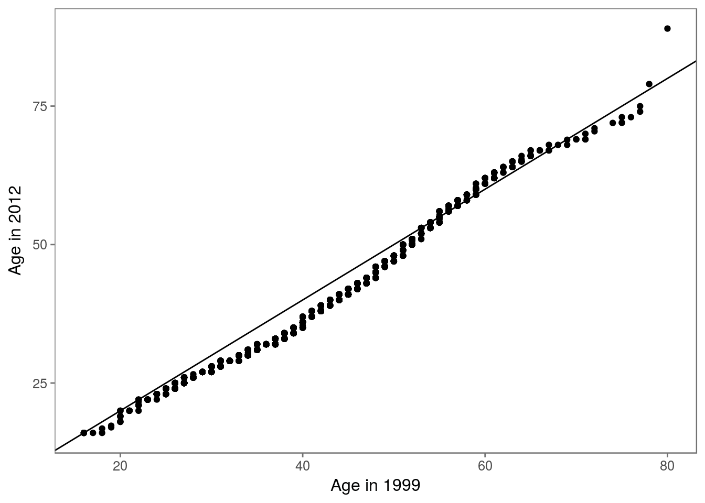
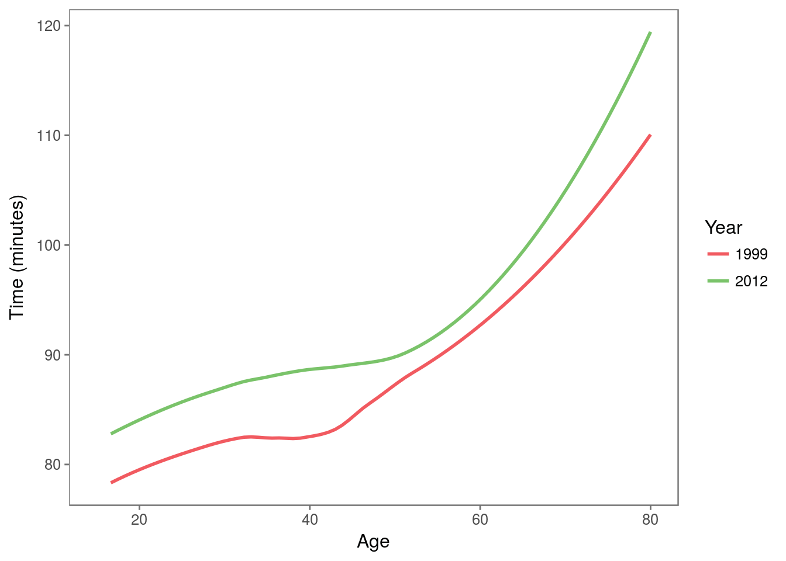
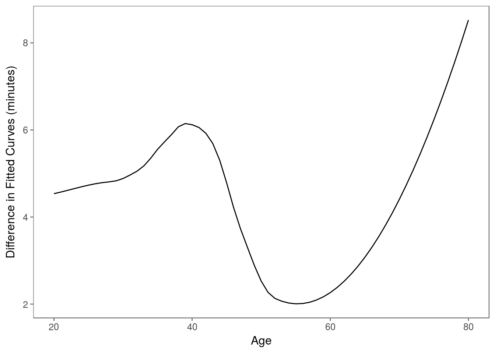

5 Exploring the Run Time for All Male Runners
Now that we have completed the extraction of our data from the tables published on the Cherry Blossom Web site, we can begin to study the relationship between age and run time. Typically, we first examine our data graphically in a scatter plot with run time on the y-axis and age on the x-axis. We can make such a scatter plot for the male runners with the following call to ggplot().
ggplot(men_df, aes(age, time)) +
geom_point()## Warning: Removed 21 rows containing missing values (geom_point).Figure 5.1: Default Scatter Plot for Run Time vs. Age for Male Runners. This plot demonstrates that a simple scatter plot of run time by age for the 70,000 male runners leads to such severe over plotting that the shape of the data is not discernible.

The resulting plot appears in Figure 5.1. Most of the points appear as a black blob in the scatter plot because so many points have been plotted on top of each other. The shape of the distribution is obscured because we cannot see which regions of the (age, run time) space are more densely populated. Notice also the vertical stripes in the plot. These are the result of runner’s age being reported to the nearest year, which results in more over plotting. In the next section, we consider a few alterations to this default scatter plot that address the problem of over plotting.
5.1 Making Plots with Many Observations
There are several modifications we can make to the plot in Figure 5.1 to ameliorate the effect of over plotting. We can reduce the size of the plotting symbol, use transparent colors for the plotting symbol, and add a small amount of random noise to the age variable. Alternatively, we can create a plot that reveals a smoothed version of the density of the points in each region. We can also make a series of boxplots instead of a scatter plot. We demonstrate each of these approaches in this section.
men_df %>%
filter(age > 5) %>%
ggplot(aes(age, time)) +
geom_jitter(shape = '.', size = 2, alpha = 0.2, height = 0, width = 0.5, color = '#54278f')Figure 5.2: Revised Scatter Plot of Male Runners. This plot revises the simple scatter plot by changing the plotting symbol from a circle to a point, reducing the size of the plotting symbol, using a transparent color for the points, and adding a small amount of random noise to age. Now we see the shape of the high density region containing most of the runners and the slight upward trend of time with increasing age.

Our first plot appears in Figure 5.2. This plot is much improved from the initial one in Figure 5.1. We can see where the bulk of the runners are, including what appears to be a slight upward curvature in run time as age increases and a skew distribution of run time given age. We can also see the small group of runners with very fast run times.
men_df %>%
filter(age > 5) %>%
ggplot(aes(age, time)) +
stat_density_2d(aes(fill = ..density..), geom = 'raster', contour = FALSE) +
scale_fill_gradientn(colors = c('white', 'dodgerblue3', 'dodgerblue4'), values = c(0, 0.5, 1))Figure 5.3: Smoothed Scatter Plot of Male Runners Race Times vs. Age. This plot offers an alternative to the scatter plot that uses jittering and transparent color to ameliorate the over plotting. Here there is no need to jitter age because the smoothing action essentially does that for us by spreading an individual runner’s (age, run time) pair over a small region. The shape of the high density region has a very similar shape to the earlier plot.

The smoothed two-dimensional density plot in Figure 5.3 shows a very similar shape to our plot in Figure 5.2.
A very different approach to these scatter plots is to graphically display summary statistics of run time for subgroups of runners with roughly the same age. Here, we group the runners into 10-year age intervals and plot the summaries for each subgroup in the form of a boxplot (see Figure 5.4). With these side-by-side boxplots, the size of the data does not obscure the main features, e.g., the quartiles and tails for an age group. To make these boxplots, we categorize age using the cut() function. We first remove those runners under 15 or who have unrealistic run times. Then we categorize age with
men_df_agecat <- men_df %>%
filter(time > 30, !is.na(age), age > 15) %>%
mutate(age_cat = cut(age, breaks = c(seq(15, 75, 10), 90)))
table(men_df_agecat$age_cat)##
## (15,25] (25,35] (35,45] (45,55] (55,65] (65,75] (75,90]
## 5804 25434 20535 12212 5001 752 69This new variable, age_cat, is a factor that categorizes age into 10-year intervals with the exception of all of those over 75 being lumped together into one interval.
We see in Figure 5.4 that we have created a series of boxplots rather than a scatter plot. We observe in this plot that the upper quartile increases faster with age than the median and lower quartile. In the next section, we try summarizing this relationship between age and run time more formally.
men_df_agecat %>%
ggplot(aes(age_cat, time)) +
geom_boxplot() +
labs(x = 'Age (years)', y = 'Run time (minutes)')Figure 5.4: Side-by-Side Boxplots of Male Runners’ Run Time vs. Age. This sequence of boxplots shows the quartiles of time for men grouped into 10-year age intervals. As age increases, all the quartiles increase. However, the box becomes asymmetrical with age, which indicates that the upper quartile increases faster than the median and lower quartile.

5.2 Fitting Models to Average Performance
As seen in Figure 5.4, the average performance seems to curve upward with age. A simple linear model may be inadequate to describe this relationship. To see how well the simple linear model captures the relationship (or not) between run time and age, we fit the model with
lm_age <- lm(time ~ age, data = men_df_agecat)The lm() function performs least squares to find the best fitting line to our data, which we see has the following intercept and slope:
lm_age$coefficients## (Intercept) age
## 78.7570864 0.2252816We have assigned the return value from lm() to lm_age. This object contains the coefficients from the fit, predicted values, residuals, and other information about the linear least squares fit of run time to age. We can retrieve a brief summary of the fit with a call to summary() as follows:
summary(lm_age)##
## Call:
## lm(formula = time ~ age, data = men_df_agecat)
##
## Residuals:
## Min 1Q Median 3Q Max
## -40.333 -10.220 -0.952 9.102 82.425
##
## Coefficients:
## Estimate Std. Error t value Pr(>|t|)
## (Intercept) 78.757086 0.207692 379.20 <2e-16 ***
## age 0.225282 0.005169 43.58 <2e-16 ***
## ---
## Signif. codes: 0 '***' 0.001 '**' 0.01 '*' 0.05 '.' 0.1 ' ' 1
##
## Residual standard error: 14.77 on 69805 degrees of freedom
## Multiple R-squared: 0.02649, Adjusted R-squared: 0.02647
## F-statistic: 1899 on 1 and 69805 DF, p-value: < 2.2e-16To help us assess how well the simple linear model fits the data we plot the residuals against age. As with the original scatter plot of run time against age, we need to address the issue of over plotting. Further, to help us see any curvature in the residuals, we add to the plot a horizontal line at 0. We do this with
p <- men_df_agecat %>%
modelr::add_residuals(lm_age) %>%
ggplot(aes(age, resid)) +
stat_density_2d(aes(fill = ..density..), geom = 'raster', contour = FALSE) +
scale_fill_gradientn(colors = c('white', 'dodgerblue3', 'dodgerblue4'), values = c(0, 0.5, 1)) +
geom_hline(yintercept = 0, color = 'navy')To help us further discern any pattern in the residuals, we augment this residual plot with a smooth curve of local averages of the residuals from the fit. That is, for a particular age, say 37, we take a weighted average of the residuals for those runners with an age in a small neighborhood of 37. Such a locally fitted curve allows us to better see deviations in the pattern of residuals.
p + geom_smooth(se = FALSE, linetype = 'dashed', color = 'firebrick')## `geom_smooth()` using method = 'gam'Figure 5.5: Residual Plot from Fitting a Simple Linear Model of Performance to Age. Shown here is a smoothed scatter plot of the residuals from the fit of the simple linear model of run time to age for male runners who are 15 to 80 years old. Overlaid on the scatter plot are two curves. The “curve” in dark blue is a solid horizontal line at \(y = 0\). The red dashed curve is a local smooth of the residuals.

The augmented smoothed scatter plot appears in Figure 5.5. We see that the simple linear model tends to underestimate the run time for men over 60. This confirms our observations from the boxplot and smooth scatter plot of the nonlinear trend in run time. The simple linear model is not able to capture the change in performance with age.
We consider two approaches to a more complex fit: a piecewise linear model and a nonparametric smooth curve. For the latter, we simply take local weighted averages of time as age varies, just as we smoothed the residuals from the linear fit. We use loess() to do this with
men_res_lo <- loess(time ~ age, data = men_df_agecat)and we make predictions for all ages ranging from 20 to 80 with
age20to80 <- 20:80
men_res_lo_pr <- predict(men_res_lo, data.frame(age = age20to80))The curve appears in Figure 5.6.
Next we fit a piecewise linear model, which consists of several connected line segments. This is similar to the idea of the locally smoothed curve from loess() in that it allows us to bend the line at certain points to better fit the data. The difference is that the fit must be linear between the hinges. We place hinges at 30, 40, 50, and 60 and thus allow the slope of the line to change at these decade markers. The fitted “curve” appears in Figure 5.6.
How do we fit such a model to our data? Before we fit the full piecewise model, we consider a simpler model with one hinge at 50. We first create an over50 variable that takes on the value 0 for ages 50 and under and otherwise holds the number of years over 50, e.g. 1 for someone who is 51, 2 for someone who is 52, and so on. If our fit is \(a + b \times \textrm{age} + c \times \textrm{over50}\) then for an age below 50 this is simply \(a + b \times \textrm{age}\) and for an age over 50 it is equivalent to \((a - 50c) + (b + c) \textrm{age}\). We see that the coefficient \(c\) is the change in the slope from below 50 to above 50, and the intercept makes the line segments connect.
Our first task then is to create this over50 variable. We use the pmax() function, which performs an element-wise or “parallel” maximum. We find the maximum of each element of men_df$age - 50 and 0 with
over50 <- pmax(0, men_df_agecat$age - 50)We then fit this augmented model as follows.
lm_over50 <- lm(time ~ age + over50, data = men_df_agecat)
summary(lm_over50)##
## Call:
## lm(formula = time ~ age + over50, data = men_df_agecat)
##
## Residuals:
## Min 1Q Median 3Q Max
## -40.265 -10.098 -0.882 9.061 79.043
##
## Coefficients:
## Estimate Std. Error t value Pr(>|t|)
## (Intercept) 82.754071 0.265035 312.24 <2e-16 ***
## age 0.105720 0.007147 14.79 <2e-16 ***
## over50 0.563573 0.023367 24.12 <2e-16 ***
## ---
## Signif. codes: 0 '***' 0.001 '**' 0.01 '*' 0.05 '.' 0.1 ' ' 1
##
## Residual standard error: 14.71 on 69804 degrees of freedom
## Multiple R-squared: 0.03453, Adjusted R-squared: 0.0345
## F-statistic: 1248 on 2 and 69804 DF, p-value: < 2.2e-16Now the slope of the line for those under 50 is less steep than in our original simple linear model, and for ages over 50, the model indicates the average man slows by 0.67 minutes, which is an additional 0.56 minutes a year compared to those under fifty.
We can create the over30, over40, etc. variables as follows:
decades <- seq(30, 60, by = 10)
over_age <- map_dfc(decades, function(x) {
name <- paste0('over', x)
df <- data_frame(pmax(0, men_df_agecat$age - x))
names(df) <- name
df
})
tail(over_age)## # A tibble: 6 x 4
## over30 over40 over50 over60
## <dbl> <dbl> <dbl> <dbl>
## 1 36 26 16 6
## 2 11 1 0 0
## 3 9 0 0 0
## 4 26 16 6 0
## 5 5 0 0 0
## 6 18 8 0 0Now that we have each of these variables, we can create the model.
lm_piecewise <- men_df_agecat %>%
bind_cols(over_age) %>%
select(time, age, starts_with('over')) %>%
lm(time ~ ., data = .)
summary(lm_piecewise)##
## Call:
## lm(formula = time ~ ., data = .)
##
## Residuals:
## Min 1Q Median 3Q Max
## -40.921 -10.119 -0.885 9.023 78.965
##
## Coefficients:
## Estimate Std. Error t value Pr(>|t|)
## (Intercept) 74.228651 0.915244 81.103 < 2e-16 ***
## age 0.424283 0.033207 12.777 < 2e-16 ***
## over30 -0.477006 0.047778 -9.984 < 2e-16 ***
## over40 0.221560 0.040666 5.448 5.1e-08 ***
## over50 0.494507 0.052932 9.342 < 2e-16 ***
## over60 -0.004667 0.077637 -0.060 0.952
## ---
## Signif. codes: 0 '***' 0.001 '**' 0.01 '*' 0.05 '.' 0.1 ' ' 1
##
## Residual standard error: 14.7 on 69801 degrees of freedom
## Multiple R-squared: 0.03593, Adjusted R-squared: 0.03586
## F-statistic: 520.2 on 5 and 69801 DF, p-value: < 2.2e-16This model has an interpretation similar to the model with just age and over50. That is, the coefficient for, say, over40 is the change in the slope for ages in (30, 40] to ages in (40, 50].
Notice that the coefficient for over60 is essentially 0, meaning that those over 60 do not slow down any faster than those in their fifties, i.e. about 0.494 minutes more per year for each year over 50 for a total of about 0.66 minutes for the 10-mile race per year.
How do we plot this piecewise linear function that we have fitted? As with the loess curve, we can use predict() to provide fitted values for each age value from 20 to 80. However, we need to provide predict() with all of the covariates used in making the fit, i.e., age, over30, over40, over50, and over60. We can create a data frame of these covariates just as we did for the full data set as follows:
over_age_df <- map_dfc(decades, function(x) {
name <- paste0('over', x)
df <- data_frame(pmax(0, age20to80 - x))
names(df) <- name
df
}) %>%
bind_cols(age = age20to80, .)
tail(over_age_df)## # A tibble: 6 x 5
## age over30 over40 over50 over60
## <int> <dbl> <dbl> <dbl> <dbl>
## 1 75 45 35 25 15
## 2 76 46 36 26 16
## 3 77 47 37 27 17
## 4 78 48 38 28 18
## 5 79 49 39 29 19
## 6 80 50 40 30 20Then we call predict() passing it the lm object, i.e. lm_piecewise, with the details of the fit and also the covariates to use to make the predictions, i.e. over_age_df. That is, we call predict() with
over_age_df <- over_age_df %>% modelr::add_predictions(lm_piecewise)We plot this fitted piecewise linear function and the loess curve with
over_age_df %>%
mutate(loess = men_res_lo_pr) %>%
gather(type, value, pred, loess) %>%
ggplot(aes(age, value, color = type)) +
geom_line() +
scale_color_few(name = '', labels = c('loess', 'piecewise')) +
labs(title = 'Predicted race times', x = 'Age (years)', y = 'Time (minutes)')
Figure 5.6: Piecewise Linear and Loess Curves Fitted to Run Time vs. Age. Here we have plotted the fitted curves from loess() and a piecewise linear model with hinges at 30, 40, 50, and 60. These curves follow each other quite closely. However, there appears to be more curvature in the over 50 loess fit that is not captured in the piecewise linear fit.
The two fitted curves appear in Figure 5.6. We see that they follow each other quite closely. The main deviation is in the over 70 group. We did not include a hinge at 70 so our fitted model is unable to capture the sharper increase for those over 70. We may want to consider adding this additional hinge to our model to see if it improves the fit. It may seem that we have made great progress in modeling the average performance, but we must interpret these results with care. For example, suppose, as seems likely, that younger runners who are slow tend to drop out of racing as they age so older runners who do participate are those who tend to be faster. This can bias our estimate of how running speed changes with age. Additionally, these data consist of 14 cross-sectional snapshots of runners. We might ask ourselves whether or not the composition of the participants has changed over this time period. These concerns are the topics of the next two sections.
5.3 Cross-Sectional Data and Covariates
In our earlier analysis, we examined the average performance for runners of different ages. That is, we looked at average performance for, e.g., 30-39 year olds and 40-49 year olds in the Cherry Blossom road race. However, we have not seen how a runner’s performance changes as he or she ages. These two groups (30-39 and 40-49 year olds) are composed of different people and if these groups of people differ from each other in some significant ways, e.g., those in their 30s are more likely to be world class runners and those in their 40s are more likely to be local amateur athletes, then we might be misled by comparing these two group’s average performances. To further complicate the matter, we have data from 14 different races so we are also averaging across the participants in these different races. We expect the average performances to be the same across the years. However, each year we have a self-selected group of participants, and we might wonder whether the composition of the participants has changed over the years. If it has, that could further complicate inference.
We know that the Cherry Blossom 10-mile run has been increasingly popular. Figure 5.7 indicates that the number of male runners has more than doubled over the 14 years. It seems reasonable to question if the demographics of the participants have changed over this time period.
men_df_agecat %>%
ggplot(aes(factor(year))) +
geom_bar(width = 0.6) +
labs(x = 'Year', y = 'Number of Runners')Figure 5.7: Line Plot of the Number of Male Runners by Year. This plot shows that the number of male runners in the Cherry Blossom 10-mile race has more than doubled from 1999 to 2012.
Historically, the race was used as a preparation for the Boston Marathon. The fastest runners in the Cherry Blossom primarily come from Ethiopia, Kenya, and Tanzania. And, their times are within a minute or two of the world record of 44:24 set in 2005 by Haile Gebrselassie from Ethiopia, who was 32 at the time (see http://inglog.com/tools/world-records/). Professional runners continue to compete in the Cherry Blossom road race.
Let’s compare the distribution of performance for the earliest and latest years, i.e., the 1999 and 2012 races. We see below that while the fastest man has gotten faster from 1999 to 2012, the quartiles of the 2012 distribution are each about 3 minutes slower compared to 1999:
men_df_agecat %>%
filter(year == 1999) %>%
select(time) %>%
summary()## time
## Min. : 46.98
## 1st Qu.: 74.82
## Median : 84.29
## Mean : 84.35
## 3rd Qu.: 93.06
## Max. :170.83men_df_agecat %>%
filter(year == 2012) %>%
select(time) %>%
summary()## time
## Min. : 45.25
## 1st Qu.: 77.57
## Median : 87.47
## Mean : 88.44
## 3rd Qu.: 97.78
## Max. :150.98Could it be that the men competing in 2012 are older and therefore slower than their counterparts in 1999? We can compare the age distributions of the runners in the two races.
men_df_agecat %>%
filter(year %in% c(1999, 2012)) %>%
ggplot(aes(age, color = factor(year))) +
geom_line(stat = 'density') +
scale_color_few(name = 'Year') +
labs(x = 'Age', y = 'Density')Figure 5.8: Density Curves for the Age of Male Runners in 1999 and 2012. These two density curves have quite different shapes. The 1999 male runners have a broad, nearly flat mode where they are roughly evenly distributed in age from 28 to 45. In contrast, the 2012 runners are younger with a sharper peak just under 30 years and a skew right distribution.
The density curves in Figure 5.8 are surprising. The males in 2012 are not older. In fact, the opposite is the case. There are many more younger men in 2012 in comparison to 1999, as evidenced by the sharp peak in the 2012 distribution at about 30. We can also compare these two distributions with a quantile-quantile plot (see Figure ??). The difference in performance between 1999 and 2012 is more subtle than having an aging population of runners. We need to control the covariates, age and year, simultaneously when we analyze race performance.
pts <- qqplot(men_df_agecat$age[men_df_agecat$year == 1999],
men_df_agecat$age[men_df_agecat$year == 2012],
plot.it = FALSE) %>% as_data_frame()
pts %>%
ggplot(aes(x, y)) +
geom_point() +
geom_abline(slope = 1, intercept = 0) +
labs(x = 'Age in 1999', y = 'Age in 2012')
In the previous chapter, we saw how the average performance was flat for runners in their 30s and rose slightly in the 40s and more sharply in the 50s and 60s. We make separate smooth curves of time versus age for the 1999 and 2012 runners and plot them together as follows:
p <- men_df_agecat %>%
filter(year %in% c(1999, 2012)) %>%
ggplot(aes(age, time, color = factor(year))) +
geom_smooth(method = 'loess', se = FALSE, fullrange = TRUE) +
scale_color_few(name = 'Year') +
xlim(c(15, 80)) +
labs(x = 'Age', y = 'Time (minutes)')
p## Warning: Removed 1 rows containing non-finite values (stat_smooth).## Warning: Removed 4 rows containing missing values (geom_smooth).Figure 5.9: Loess Curves Fit to Performance for 1999 and 2012 Male Runners. This loess fit of run time to age for 2012 male runners sits above the fit for 1999 male runners. The gap between these curves is about 5 minutes for most years. The exception is in the late 40s to early 60s where the curves are within 2–3 minutes of each other. Both curves have a similar shape.
We see in Figure 5.9 that the two curves are similar in shape but the curve for 2012 is higher than the 1999 curve. There appears to be a consistent difference between these two groups of runners. Figure 5.10 shows the difference in predicted run times for these two curves. This difference narrows to 2 minutes for men in their 50s and gradually widens for men in their 60s, 70s, and 80s from 2.5 to 8.5 minutes. We leave it as an exercise to compare the run time age relationship for all 14 years of data.
lo_pr_99 <- predict(loess(time ~ age,
data = men_df_agecat,
subset = men_df_agecat$year == 1999),
data_frame(age = age20to80))
lo_pr_12 <- predict(loess(time ~ age,
data = men_df_agecat,
subset = men_df_agecat$year == 2012),
data_frame(age = age20to80))
data_frame(age = age20to80, diff = lo_pr_12 - lo_pr_99) %>%
ggplot(aes(age, diff)) +
geom_line() +
labs(x = 'Age', y = 'Difference in Fitted Curves (minutes)')Figure 5.10: Difference between Loess Curves. This line plot shows the difference between the predicted run time for 2012 and 1999 male runners.
We mention one last idea for comparing these two distributions of runners, and we leave it to the exercises to carry out this comparison. In track, there is a performance standard called age grading that measures an individual’s performance based on his or her age. It normalizes the individual’s run time by the world record for that distance for that age group. Since the fastest runners in the Cherry Blossom road race perform close to the world record, we might use the fastest runner in each age category to normalize the times. To minimize the year-to-year fluctuations, we can smooth the fastest times and use these smoothed times to normalize each runner’s time. When we do this, we find the age graded performances roughly follow the Normal distribution. However, the 1999 runners tend to be better than their 2012 counterparts as evidenced by the peak at 1.4 rather than 1.5 and a smaller IQR.
The run time distribution appears to have changed over the years, and this points out the main issue with cross-sectional studies. However, there is an advantage to having 14 years’ worth of race results. It is possible that some runners have participated in the race over several years and we can study how each runner’s performance changes as he or she grows older. In order to do this, we need to connect runners across the years.